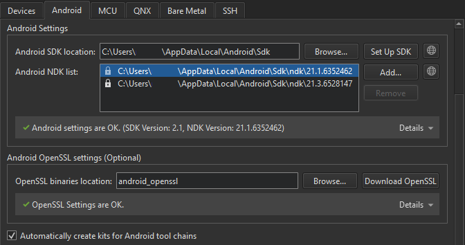
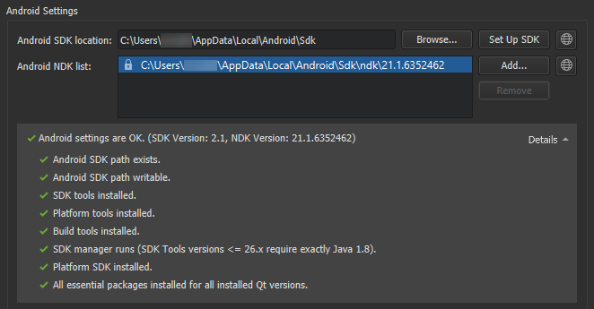
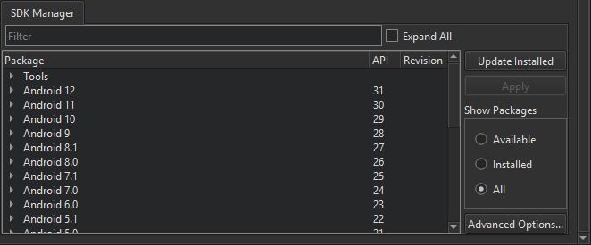
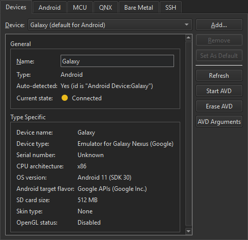

Connecting Android Devices
You can connect Android devices to the development PC using USB cables to build, run, debug, and analyze applications from Qt Creator. Devices with Android version 4.1 (API level 16) or later are supported when developing with Qt 5 and devices with Android version 6.0 (API level 23) when developing with Qt 6.
To develop for Android, you must have a tool chain for building applications for Android devices installed on the development PC. Qt Creator can automatically dowload and install the tool chain and create a suitable build and run kit that contains the tool chain and the Qt version for Android for the device's architecture.
Starting from Qt 5.14.0, the Qt for Android package contains all the architectures (ABIs) installed as one.
To enable helpful code editing features for Java, such as code completion, highlighting, function tooltips, and navigating in code, specify settings for a Java language server.
The Android Debug Bridge (adb) command line tool is integrated to Qt Creator to enable you to deploy applications to connected Android devices, to run them, and to read their logs. It includes a client and server that run on the development host and a daemon that runs on the emulator or device.
Requirements
To use Qt Creator to develop Qt applications for Android, you need Qt for Android 5.2, or later, and the tool chain that Qt Creator can automatically download, install, and configure for you. For more information, see Installing the Prerequisites.
Specifying Android Device Settings
Qt Creator offers to automatically install all the necessary packages and tools and to set up your development environment by creating debuggers, tool chains, and kits. You can use Qt Creator to:
- Download and extract the Android SDK Command-line Tools.
- Install or update the essential packages such as NDKs, build tools, and platform tools.
To set up the development environment for Android:
- Select Tools > Options > Devices > Android on Windows and Linux or Qt Creator > Preferences > Devices > Android on macOS.

- In the JDK location field, set the path to the JDK. Qt Creator checks the JDK installation and reports errors.
By default, Qt Creator tries to find a supported AdoptOpenJDK or OpenJDK installation. If none is found, you must set the path manually. If you don't have a supported JDK installed, select to open the JDK download web page in the default browser.
Note: We recommended using a 64-bit JDK, because the 32-bit one might cause issues with
cmdline-tools, and some packages might not be listed. - In the Android SDK location field, set the path to the folder where you want the Android SDK Command-line Tools to be installed.
- Select Set Up SDK to automatically download and extract the Android SDK Command-line Tools to the selected path.
The SDK Manager checks whether the tool chain is installed. If packages are missing or updates are needed, the SDK Manager offers to add or remove those packages. Before taking action, it prompts you to accept the changes it is about to make. In addition, it prompts you to accept Google licenses, as necessary.
- The installed NDK versions are listed in Android NDK list. The locked items were installed by the SDK Manager, and can only be modified from the SDK Manager tab. For more information, see Managing Android NDK Packages.
- In the Android OpenSSL group, set the path to the prebuilt OpenSSL libraries.
For Qt applications that require OpenSSL support, Qt Creator allows to quickly add the Android OpenSSL support to your project. For more information, see Adding External Libraries.
- Select Download OpenSSL to download the OpenSSL repository to the selected path. If the automatic download fails, the download web page opens for manual download.
- Select the Automatically create kits for Android tool chains check box to allow Qt Creator to create the kits for you. Qt Creator displays a warning if it cannot find a suitable Qt version.
Manual Setup
Note: We recommend that you use the latest Android SDK Command-Line Tools. Using Android SDK Tools version 25.2.5 or earlier is not supported, because they cannot be fully integrated with Qt Creator.
However, if the automatic setup does not meet your needs, you can download and install Android SDK Command-line Tools, and then install or update the NDKs, tools and packages needed for development. For more information, see Getting Started with Qt for Android.
Viewing Android Tool Chain Settings
The Android SDK Command-Line Tools download URL, the essential packages list, and the appropriate NDK for each Qt version are defined in a JSON configuration file. The file is located under the user's Qt Creator resource folder:
# Linux and macOS ~/.config/QtProject/qtcreator/android/sdk_definitions.json # Windows C:\Users\Username\AppData\Local\QtProject\qtcreator\android\sdk_definitions.json
For example, the SDK configuration file defines the NDK version 19.2.5345600 to be used for Qt 5.12.0 to 5.12.5 and Qt 5.13.0 to 5.13.1 versions:
"specific_qt_versions": [
{
"versions": ["5.12.[0-5]", "5.13.[0-1]"],
"sdk_essential_packages": ["build-tools;28.0.2", "ndk;19.2.5345600"],
"ndk_path": "ndk/19.2.5345600"
}
]
You can view the latest version of the configuration file that is up-to-date with the Android SDK and NDK changes, sdk_definitions.json, in Git.
Managing Android NDK Packages
To view the installed Android NDK versions, select Tools > Options > Devices > Android on Windows and Linux or Qt Creator > Preferences > Devices > Android on macOS.

The locked versions were installed by the SDK Manager, and can only be modified from the SDK Manager tab. For more information, see Managing Android SDK Packages.
To manually download NDKs, select .
To add custom NDK paths manually to the global list of NDKs, select Add. This creates custom tool chains and debuggers associated to that NDK. However, you have to manually create a kit that uses the custom NDK. For more information, see Adding Kits.
Managing Android SDK Packages
Since Android SDK Tools version 25.3.0, only a command-line tool, sdkmanager, is provided by Android for SDK package management. To make SDK management easier, Qt Creator provides an SDK Manager for installing, updating, and removing SDK packages. You can still use sdkmanager for advanced SDK management.
To view the installed Android SDK packages, select Tools > Options > Devices > Android > SDK Manager on Windows and Linux or Qt Creator > Preferences > Devices > Android > SDK Manager on macOS.

To filter the packages, select Available, Installed, or All in Show Packages.
To update the installed Android SDK packages, select Update Installed. Select the packages to update, and then select Apply.
To specify advanced sdkmanager settings, select Advanced Options and enter arguments in the SDK Manager arguments field. The available arguments are listed and described in Available arguments.
Managing Android Virtual Devices (AVD)
The available AVDs are listed in Tools > Options > Devices on Windows and Linux or Qt Creator > Preferences > Devices > on macOS. You can add more AVDs.

You can see the status of the selected device in Current state. To update the status information, select Refresh.
To start an AVD, select Start AVD. Usually, you don't need to start AVDs separately because they are automatically started when you select them in the kit selector to deploy applications to them.
To remove an AVD from the list and the kit selector, select Erase AVD.
To specify options for starting an AVD, select AVD Arguments.

Specify the options in Emulator command-line startup options. For available options, see Start the emulator from the command line.
Note: The Android Emulator has a bug that prevents it from starting on some systems. If an AVD does not start, you can try starting it manually by running the following commands:
cd <ANDROID_SDK>/emulator ./emulator -avd <AVD_NAME>
Creating a New AVD
To create new virtual devices:
- Select Tools > Options > Devices > Add > Android Device on Windows and Linux or Qt Creator > Preferences > Devices > Add > Android Device on macOS to open the Create New AVD dialog.

- Set the name, definition, architecture, target API level, and SD card size of the device.
- Select OK to create the AVD.
For more advanced options for creating a new AVD, use the command-line tool avdmanager or the Android Studio's native AVD Manager UI.
Debugging on Android Devices
Debugging is enabled in different ways on different Android devices. Look for USB Debugging under Developer Options. On some devices Developer Options is hidden and becomes visible only when you tap the Build number field in Settings > About several times. For more information, see Configure on-device developer options.
Select a debug build configuration to build the application for debugging.
Note: Qt Creator cannot debug applications on Android devices if Android Studio is running. If the following message is displayed in the Output pane, close Android Studio and try again:
Ignoring second debugger -accepting and dropping.